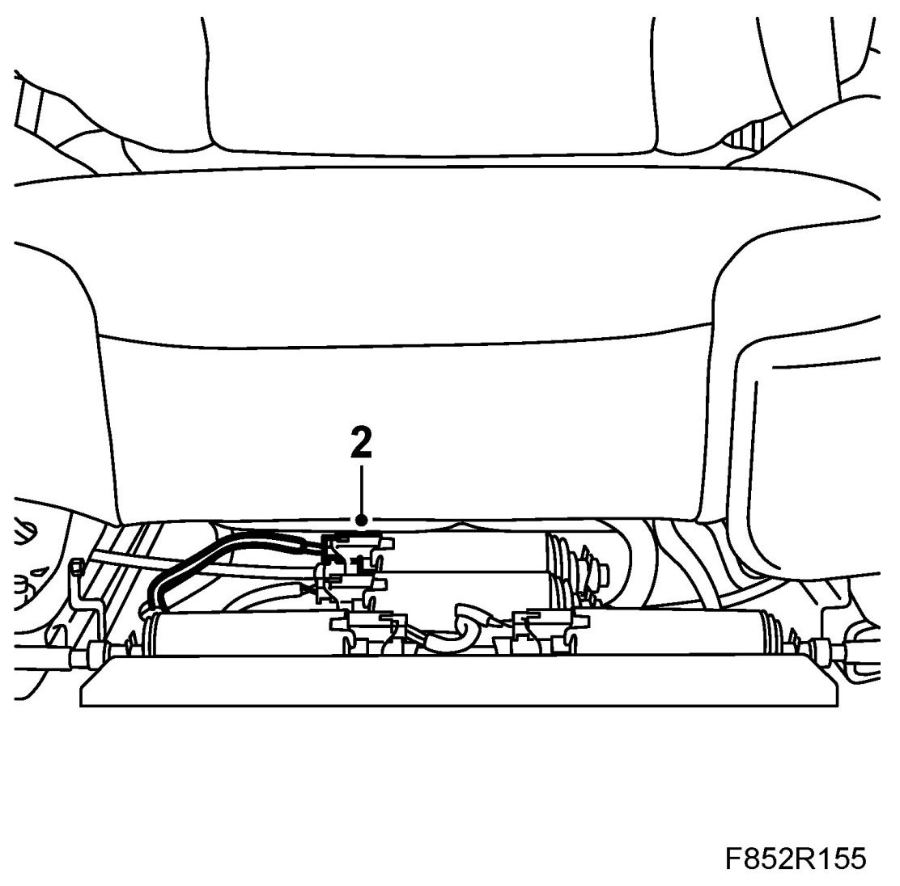
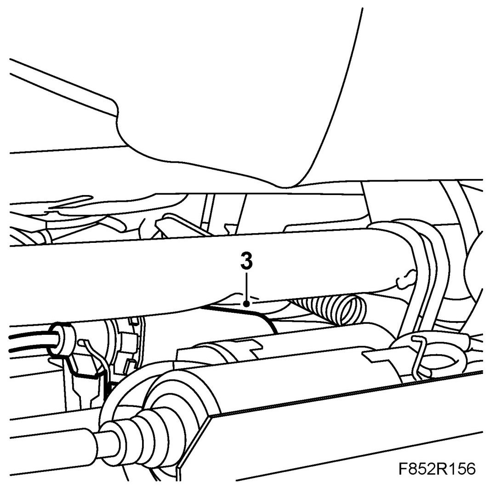

Motor, Slope Adjustment, Electrically Operated Seat (357B), CV
Motor, Slope Adjustment, Electrically Operated Seat (357b), CV
To remove
1. Move the seat to its highest position.
2. Disconnect the connector from the adjustment motor.

3. Remove the adjustment motor.
Lift the adjustment motor and drive shaft out of the holder and then separate the connector. Remove the motor and pull it off the drive shaft.

To fit
1. Fit the motor to the drive shaft. Ensure that the shaft sits correctly in the motor.
Fit the motor and drive shaft in the holder.
2. Plug in the connector.
3. Check using the diagnostic tool as follows:
Connect the diagnostic tool to the data link connector under the dashboard.
Delete any fault codes.
Turn off the ignition and turn it on again. Wait for at least 1 minute with the ignition on.
Check if any fault codes are displayed:
If a fault code is displayed: Carry out fault diagnosis as instructed for each respective diagnostic trouble code.
If no fault code is displayed: Installation is successful. Disconnect the diagnostic tool.
4. Reset the seat.